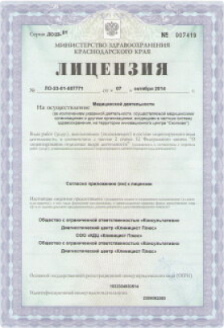
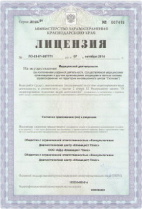

Физиотерапевтическое кодирование от наркомании
Опытные специалисты в лечении наркозависимости использует новейшие методики. К таким относится физиотерапевтическое кодирование. Суть методики заключается в воздействии на организм аппаратным методом, с помощью которого можно устранить зависимость. Выделяют несколько основных методов кодирования:
- Электросудорожная терапия. Пациент подключается к аппарату, который с временным интервалом подает небольшие разряды тока. В момент удара, врач произносит тезисы о том, что необходимо воздерживаться от приема наркотиков. Организм воспринимая происходящее, вырабатывает четкую реакцию: наркотики – боль – смерть. Через несколько сеансов, у зависимого вырабатывается стойкое отвращение к приему наркотиков.
- Воздействие лазером. С помощью лазерного луча, врач оказывает воздействие на точки на руках и голове наркомана, которые связаны с участками мозга, отвечающими за тягу к наркотикам.
- Другие аппараты. Предполагается тепловое, импульсное воздействие на человека, направленное на проявление отвращения к наркотикам.
Эффективность кодировки
Кодирование от наркомании в Москве – действенный метод, который позволяет оградить наркомана от приема запрещенных препаратов. Действие любого из методов научно доказано. Если родственники не могут самостоятельно выбрать метод кодировки, им помогут специалисты. В центре, пациенты проходят полное обследование, по результатам которого определяется их восприимчивость к тому или иному методу кодирования. Однако стоит помнить о том, что кодировка от наркотиков в Москве, не смотря на свою эффективность, все же не является панацеей.
 

Гарантия качества